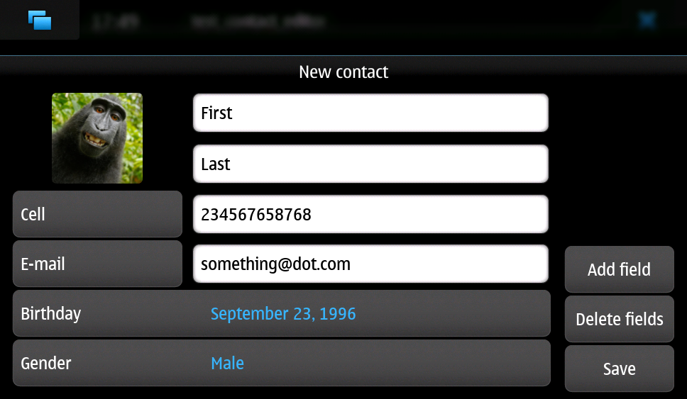
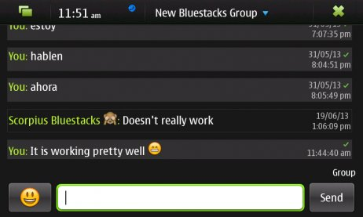
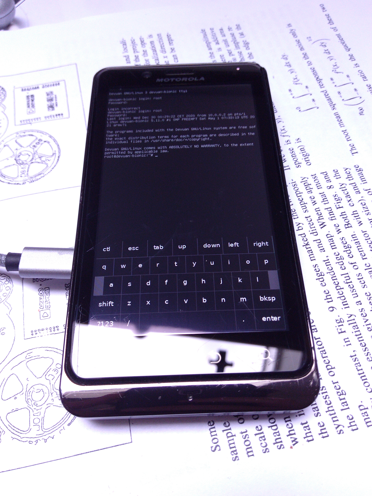
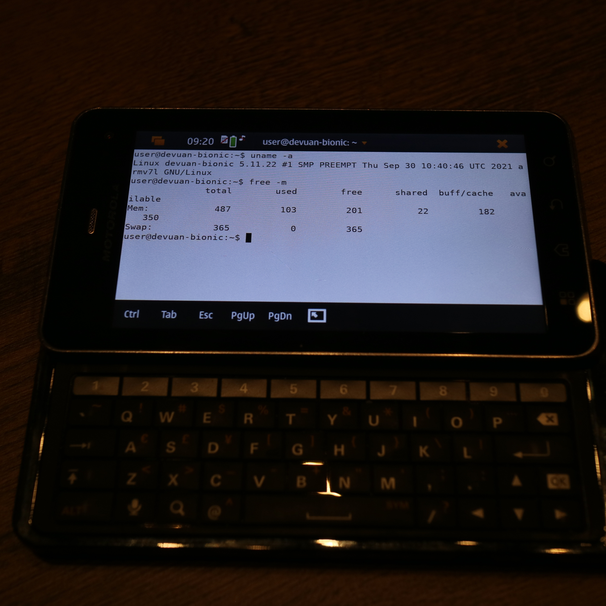

Maemo Leste - Fifteenth Update: Januari - October 2021
Merlijn Wajer, Ivan Jelincic, Thu 28 October 2021, News
Merlijn Wajer, Ivan Jelincic, Thu 28 October 2021, News
The long overdue update is finally here, it's been a while since our last update.
Here are a few highlights:
Since our NGI funding announcement we've been working hard on finishing the milestones as proposed. The Tor, Wireguard and OpenVPN integration is finished and available in the extras repositories.
Following the successful completion of this milestone, the DAPSI project has let us know that Maemo Leste has successfully moved into the second phase of the funding!
This is great news, and means that we will hopefully be able to deliver on the next milestones of the funding soon, including:
There were lots of improvements in the networking stack, as well as to many of the core daemons, this section aims to give a comprehensive overview of all the changes.
modest, the Maemo mail client has been brought to Maemo Leste. It relies on tinymail and gtkhtml3.
We will later on port modest to a newer HTML rendering framework.


We've been continuing our work on the GPS stack and liblocation, packaging various GPS interfaces and fixings bugs as we find them.
Currently, there are at least four interfaces in our repositories, they've also gotten their own pages on the wiki:
Exporting the GPS logs from gpsrecorder or maep also works fine, as we have shared in this cycling tweet.
Tor The Onion Router is software that provides anonymous communication (over the Internet). We've integrated it in Maemo Leste's connectivity framework and user interface.
There is a Tor wiki page with more screenshots and some examples on how to use it. Most of the source code is in the libicd-tor repository.
Probably the most simple way to use this code is to install it from the package manager, restart the device and configuring Tor to "Enable Transparent proxying", which will cause all the traffic of the device to be transmitted over Tor. The screenshot below shows a Droid 4 with Tor with transparent proxying enabled.

Wireguard is a relatively new and simple communication protocol that implements an encrypted Virtual Private Network (VPN). There are many use cases, but a few examples are adding your phone to a Wireguard network that makes it possible to access your LAN from wherever you are, give your device a public IPv4 address, or otherwise tunnel traffic via another machine.
There is a Wireguard wiki page with more screenshots and some examples on how to use it. Most of the source code is in the libicd-wireguard repository.
The screenshow below shows a Droid 4 with Wireguard enabled over wifi, and some interface statistics using wg show.

The OpenVPN applet and ICD2 plugin is also available, but hasn't seen quite as much testing as the Tor and Wireguard plugins.
The source can be found here: https://github.com/maemo-leste/libicd-openvpn
Maemo Fremantle supported a feature that wasn't really used much, which were the ICD2 service providers, which are a way to add connection "plugins" to specific connections. The example provided was a plugin to disable network logon pages and (automatically) deal with those. We have extended this ICD2 implementation to support Tor, Wireguard and OpenVPN.
Since there wasn't too much documentation how this integrated with the rest of the system, we developed libicd-provider-dummy to explore how the rest of the system interacts with service providers. For example, service providers can change the icon of the network in the status area, they can add additional icons in the connection dialogs and network status, and also provide customisation of the network names.
The code written to support providers in the connui interfaces can be found here in this connui-internet pull request and this connui-common pull request.
Below is an example of an IAP being configured to use Wireguard service provider - this means it will always connect to Wireguard when connecting to the IAP, and if connecting to Wireguard fails, the network connection will be severed.


Due to the way wg-quick from the Wireguard tools worked, we also had to overhaul our DNS scripts. We initially imported them from Maemo Leste, but recently upgraded them to use resolvconf (issue #583), making our setup more robust.
Previously, the connection dialogs on Maemo Leste would malfunction if they invoked programmatically (#539), this problem has been solved now.
uvos has been consistently working on improving mce and a lot has changed:
Additionally, mce now supports some more dbus interfaces for changing various settings, which were previously changed through gconf directly, which made for some awkward architecture:
Hidden access points are now supported in what turned out to be long and painful process of debugging problems in connui-internet, wpasupplicant itself and the N900 linux kernel.
The network scanning dialog would sometimes render scanning results with a (long) delay, this is now fixed (issue #342).
hildon-input-method recently got some improvements where it can insert characters into windows that do not explicitly support hildon input method (like gtk2). The virtual keyboard can be summoned using dbus and can insert (currently only) english characters into plain X11 windows. See the video below showing how it works in Firefox (the touch screen button is used to summon the virtual keyboard).
In the future, we plan to use the at-spi accessibility interface to make the hildon-input-method integration more complete and universal.
Since our last update, hildon-desktop has supported rotating the devices screen (and adjust the touch input accordingly to match the screen orientation). With this update, we've improved how that is implemented exactly to make it more robust. For example, upon certain updates the touch input would reset to the native orientation, which could be quite confusing. All of this is solved now by making this work directly in hildon-desktop, rather than other scripts that act on dbus signals.
Maemo also sets more XDG_* environment variables now to ensure that Hildon applications behave properly, and show the right directories, see issue #426.
In some rare cases, hildon-desktop would not boot if the battery is very low, this is fixed now, see issue #435.
osso-xterm now opens links in the default browser, and the volume keys should change the font size on the Droid 4 and similar devices.
Maemo Leste has supported basic audio output since the very first release, but one of the many tricky parts of a mobile operating system is the audio routing. For example, when one receives an incoming phone call, any music that is playing should stop, and the ringtone sound should be heard. When a headphone is plugged in during a call, one would expect the audio to switch from earpiece to headphone, but, when a mediaplayer is playing music, unplugging the headphones should perhaps not necessarily lead to music being played on the speakers, as one might disturb others - so different outputs need their own volume control, which needs to be saved somewhere, and so forth.
Many of these problems were solved in Maemo Fremantle, and much of that work made it into Sailfish OS (Mer Project), so we've gone full circle and have started packaging their work for Maemo. Here is a non-exhaustive list of packages that we have ported and packaged:
These modules should help us with the audio policy routing, but also contain device-specific support modules, for example in the case of the N900, where the packages should help routing audio to and from the modem during phone calls.
More work remains to be done to integrate this on our devices, since audio policies are somewhat complex and many of the components aren't well known to us.
sphone is a ofono GUI based on gtk, which uvos has been modernising and improving a bunch, aiming to make it modular with optional hildon/maemo support. In other words: it's a program that allows you to make phone calls on Maemo Leste, at least theoretically.
The integration in Maemo Leste is still very much a work in progress, as is sphone, but it's already working to some degree, as can be seen in this video:
Integration with the Maemo address book (and other address books) is also being worked on. Here's a screenshot of the interface is portrait mode:

The application is only available in the -devel repositories.
We're still working on fully implementing the Maemo Fremantle address book and contacts framework (osso-abook), but we've made a lot of progress - it should be ready pretty soon.
There is not a lot to report on this subject yet, besides what was mentioned in the Funding update.
We aim to have the Conversations UI be a frontend for many Telepathy protocols (SMS just being one of them), using the existing (Maemo Fremantle) rtcom (Real Time Communication) framework. The widget set that we will use will likely be Qt, and we will likely using an existing Maemo application and strip out everything we don't need, and then add the parts we want.
In concrete steps:
Below is a low-resolution screenshot of what Yappari looks like on Maemo Fremantle - it is not a screenshot of our current conversations application.
We now feature a recovery boot option for various devices, see issue #505 and image-builder pull request 8. This is not yet available for the Pinephone and N900, but it is for the Droid 3, Droid 4 and Droid Bionic.
The Maemo Leste emergency rescue boot mode now features a framebuffer keyboard, our modified version of it can be found in the fbkeyboard repository.
fbkeyboard is not available when the device has a hardware keyboard.
If your Nokia N900 had a lock code set, Maemo Leste would get stuck somewhere during booting with a black screen. This has now been solved, see issue #495 and issue #343.
The libsdl video and input problems we were seeing before have finally been fixed, see issue #413. This is great since it also makes many other applications more usable, for example cloudgps . So the (full screen) window placement should now work fine, and both keyboard and mouse input should just work.
We have added python bindings for libconic, the hildon connection management library, see python-conic.
ScummVM was broken since our migration to Devuan Beowulf, but rebasing on a newer released fixed the problem, and now ScummVM works again.
There is also a ScummVM wiki entry now, with various tips and tricks: https://leste.maemo.org/Extras/ScummVM
We have added wiki pages for various Extras packages, you can find them under the Category:Extras page.
There is now also a package Infobox template to make it easy to add a page for a package - if you're a maintainer of a package, please consider making a wiki page entry for it!
We have imported additional community translations:
And we have drastically changed how we get translations to the Maemo Leste devices - we now use the awesome weblate.org translation interface, making it easy to change or submit translations, automatically creating Github pull requests in the process.
Check out Maemo Leste on Weblate.org.
diejuse has been experimenting with running Maemo Leste in a chroot on Android, and he has documented the process here.
Here are two videos of it in action:
This is a new device port (codename solana) - it's still in the early stages, but a lot of things already just work, enough for us to boast about it:
The following still needs work:
More information on the Droid 3 wiki page.
clown-boot is the name for a method devised by uvos that uses a double-kexec approach to load the kexecboot bootloader, and then the Maemo Leste linux kernel. It was initially created for the Bionic device, but we've re-used the approach for the Motorola Droid 3. We've decided to clean up the code a bit and distributed it over three different repositories for reproducibility:
The older code for clown-boot on the Droid 3 can be found here.
The Motorola Droid 4 should have significantly better power management, due to a quircks-mapphone module introduced in MCE, which will deal with silencing the modem signal strength updates when the display is off and also deal with a (current) power management problem in the modem usb interface that keeps the modem awake even when there is no data to read. See this commit for the code, and this leste-config pull request for the addition of the module.
The touch screen buttons now provide specific features:
Some of these features are also added to the pinephone hardware buttons.
Finally, uvos has been working on headphone plugin detection, which will make it into our development kernel soon.
As mentioned in osso-systemui-devlock, unlocking devices at boot should now work. We are now also using the nl80211 interface, as opposed to the wext interface.
Launching the virtual keyboard is now supported in any X11 window, as mentioned in the hildon-input-method section, the key to activate it is the volume up key. Once we have the 3D situation on the N900 and Droid devices under control, we will start looking at fixing the 3D rendering problems that seems to occur on the pinephone occasionally.
If you have questions, are interested in specifics, or helping out, or wish to have a specific package ported, please see our bugtracker.
We have several Nokia N900 and Motorola Droid 4 and Bionic units available to interested developers, so if you are interested in helping out but have trouble acquiring a device, let us know.
Please also join our mailing list to stay up to date, ask questions and/or help out. Another great way to get in touch is to join the IRC channel.
If you like our work and want to see it continue, join us!